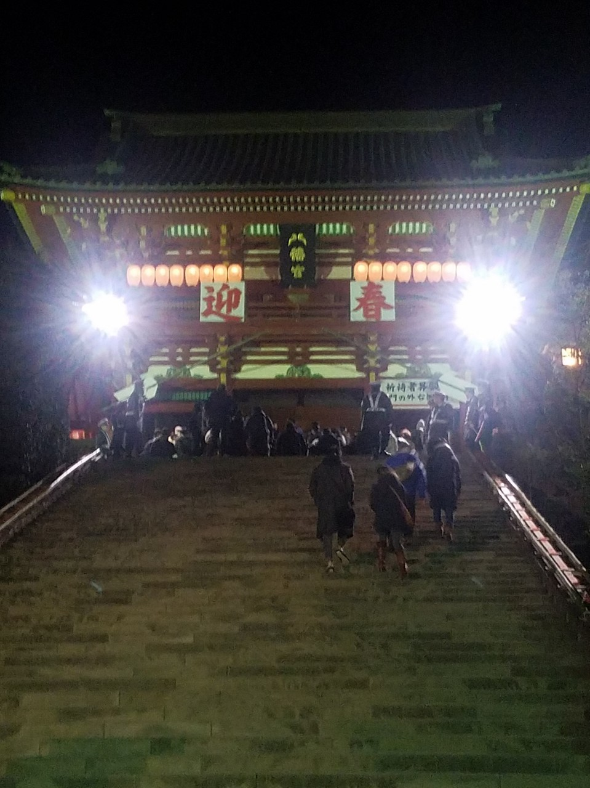

2020年がやってきた。
毎年大晦日の夜に家を出発し、初詣に行っている。
前々回は明治神宮、前回は浅草寺。そして、今回は鎌倉の鶴岡八幡宮に行った。
一緒に行くメンバーは幼稚園からの幼馴染4人。
普段は東京、奈良、埼玉とそれぞれの場所で働いているが、年末は決まって地元に戻り行きつけの居酒屋で飲んだ後に初詣に行く流れができている。
飲みの席では仕事に家庭に忙しい友人たちの話を聞くのが好きだ。
大きなプロジェクトに関わり、これからの仕事のヴィジョンに向かって快活に話すやつ。昨年結婚し今年の春に子どもが生まれるやつ。みんな方向は違うけど、懸命に頑張っている。その姿を思い浮かべながら話を聞く大晦日の夜がたまらなく愛しく感じる。
「来年から岐阜なんだろ？」
「しかし、思い切ったよなあ」
友人たちも僕のこれからに期待を寄せながら話を聞いてくれる。
2020年も大晦日に沢山話せるようなことを現実にしたいな、と密かに心に思う。
アルコールがちょうどいい具合に体に入った頃、僕らは寒空の下に出て大晦日だけ終電のない電車に乗り込む。すでに車内は初詣客でごった返しているが、乗客が笑顔に溢れている光景が毎年のごとく目に焼きつく。
ちなみに都内の参拝客は桁違いに多く、明治神宮では三が日中になんと300万人もの人たちが神社の鳥居をくぐり、手を合わせ、新年の幸せを願う。時代はこれからも変わり続けるけど、日本人の信仰心はずっと変わらないんだろうなと確信する。
鶴岡八幡宮に到着し、案の定長蛇の参拝列に並ぶ。途中の屋台で売っている甘酒とつまみを買い、友人たちとたわいもなく話していると徐々に拝殿が見えてきた。そして、まもなく賽銭箱の目の前でお賽銭をし、礼、手を合わせた。
いつもは健康祈願や家族の安全祈願をする。今年はそれらに加えて、もう一つ神様にお願いをした。
「精一杯努力しますので、どうか、自分が決めた道が正しいと思えますように」
新年を願う今日の日を忘れずに。
新年を過ごす今日という日を思い出に。
今年も素敵な年になったら良いなあ。
